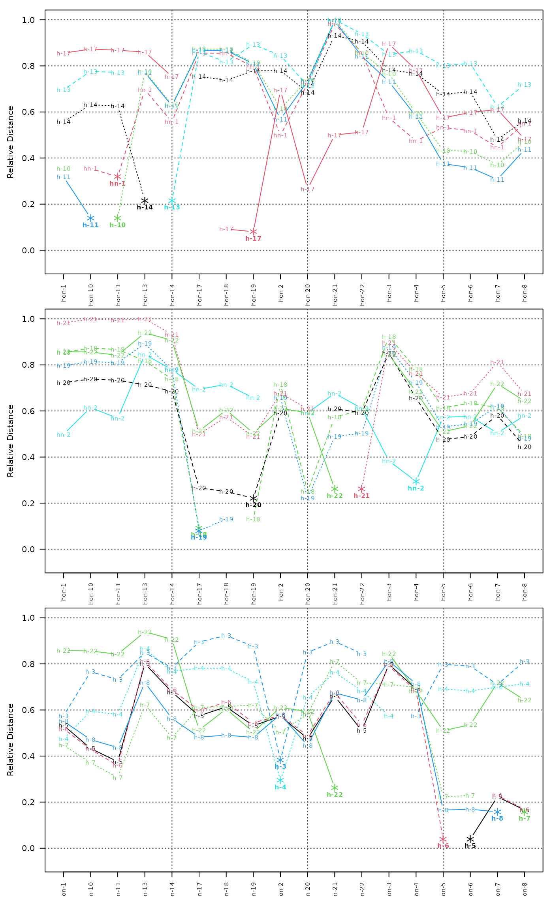

Plot pair-wise distances between individuals as line segments.
distance matrix, should be of class 'dist' or compatible class
an integer sequence defining which individuals should be compared
No value is returned.
By default all individuals are plotting on the same axis. When there are more than about 10 individuals, the plot can become quite messy. See examples below for ideas.
http://casoilresource.lawr.ucdavis.edu/
data(sp2)
d <- profile_compare(sp2, vars=c('prop','field_ph','hue','value'),
max_d=100, k=0.01, sample_interval=5)
#> Computing dissimilarity matrices from 18 profiles
#> [0.07 Mb]
par(mfcol=c(3,1), mar=c(2.5,4.5,1,1))
plot_distance_graph(d, idx=1:6)
plot_distance_graph(d, idx=7:12)
plot_distance_graph(d, idx=12:18)
